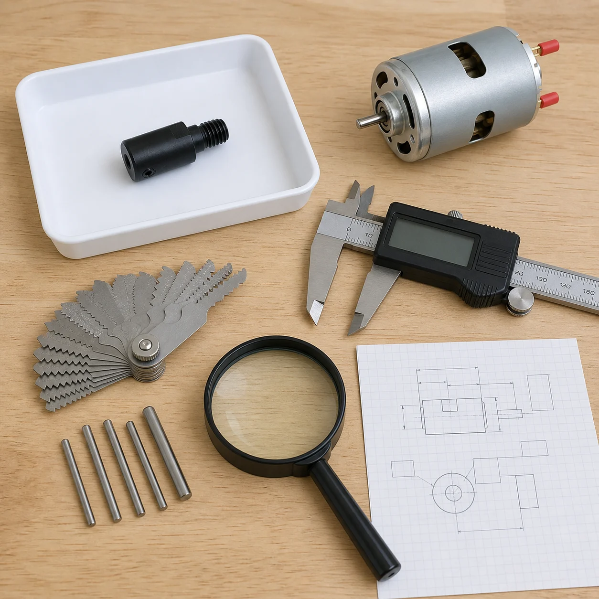
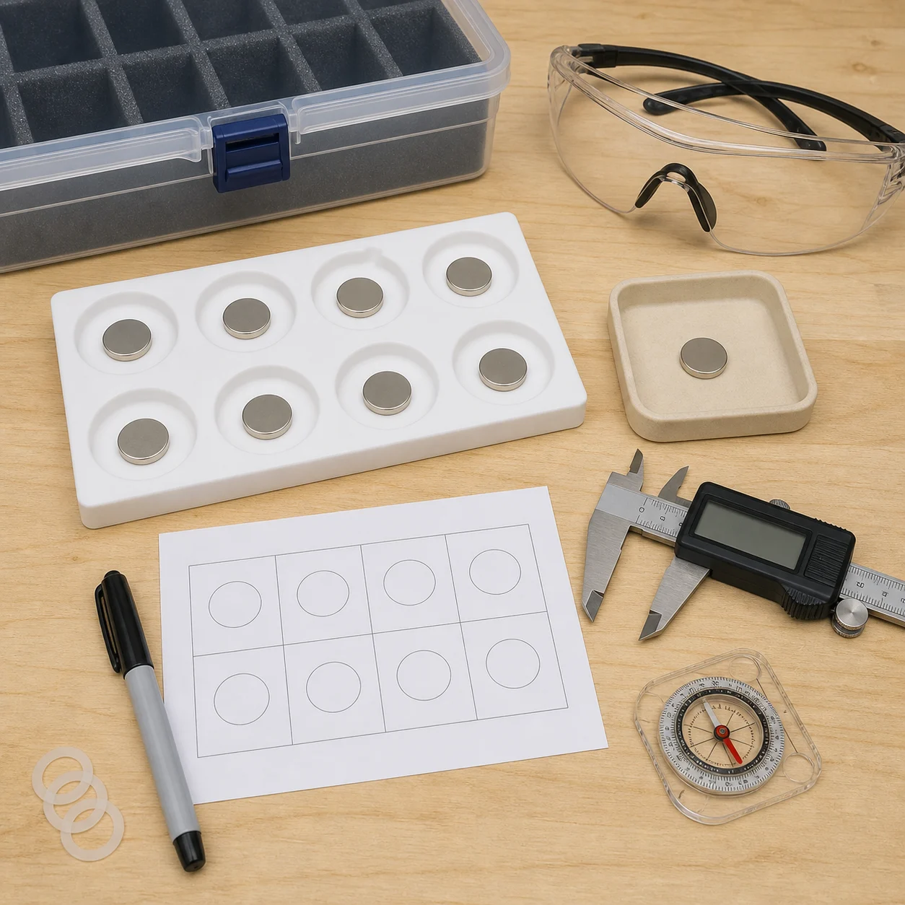

Puede completar fichas, dibujar plantillas y marcar imanes bajo supervisión, siempre con el motor desconectado.
Capítulo 3 · Mecánica del rotor
Diseñar antes de hacerlo girar
Medidas, geometría, retención, equilibrado y contención; nada de velocidad sin números.
Resultado de este capítulo
Obtener un expediente de diseño verificable: medidas reales del eje y adaptador, dibujo del rotor, patrón 4/6/8, regla de polaridad, sistema de retención, límite de RPM, equilibrado y resguardo.
Cuando todos los TODO estén cerrados, una persona competente podrá fabricar e inspeccionar el conjunto y hacerlo girar únicamente a mano, sin energía.
Límite de esta etapa
Este capítulo no autoriza una prueba motorizada del rotor. El PWM regula energía, pero no mide ni limita por sí solo las RPM.
Hasta definir una velocidad máxima y disponer de medida independiente, “mando bajo” o “baja velocidad” no son criterios de seguridad.
Selecciona materiales, calcula cargas, aprueba retención, acoplamiento, equilibrado, RPM y contención.
Ante imán dañado, holgura, grieta, roce, medida contradictoria o protección incompleta.
0 comprobaciones realizadas
Capítulo 3 · Inventario mecánico
Qué entra y qué queda fuera
Se conservan las decisiones del proyecto sin convertir candidatos en soluciones aprobadas.
Decisiones conservadas
- Un CD real como disco del rotor, decisión confirmada por el proyecto.
- Configuraciones previstas de 4, 6 y 8 imanes.
- Imanes principales descritos como discos de neodimio de 15 × 2 mm, pendientes de medir físicamente.
- Adaptador anunciado M10-5 para eje de 5 mm, pendiente de identificación real.
- El rotor definitivo tendrá protección mecánica.
Exclusiones
- La hoja de sierra y su aro no se usan como sierra ni como rotor.
- No se mezclan imanes redondos y rectangulares en una misma configuración.
- No se perforan, lijan, cortan ni mecanizan los imanes de neodimio.
- No se fija nada con cinta, plastilina, pegamento caliente o una solución improvisada.
- No se ensaya un rotor sin resguardo cerrado.


Capítulo 3 · Metrología
Medir el eje y el adaptador reales
La fotografía comercial sirve de referencia; la fabricación se basa en medidas repetidas.
1
Estación de inspección
Referencia generadaRegistrar valores reales

Abrir imagenReferencia generada: muestra qué documentar sin afirmar dimensiones. El motor está desconectado y el adaptador, retirado.
- Separar todas las piezas. Motor sin alimentación, terminales aislados y adaptador en una bandeja no metálica.
- Verificar el instrumento. Limpiar las superficies, cerrar el calibre y comprobar su cero según el fabricante.
- Medir tres veces. Diámetro y longitud útil del eje; diámetro y profundidad del alojamiento; cuerpo, hombro y rosca del adaptador.
- Identificar la rosca. Medir diámetro y paso con galga; “M10” del anuncio no basta para elegir una tuerca.
- Inspeccionar la fijación lateral. Registrar tornillo, llave, punta, longitud útil y si el eje posee plano. No crear un plano todavía.
- Comprobar concentricidad. Una persona competente define cómo medir holgura y descentramiento antes de aprobar el adaptador.
| Dato real | Registro necesario |
|---|---|
| Eje del motor | Diámetro en varios puntos, longitud útil, hombro, estado superficial y presencia/ausencia de plano. |
| Alojamiento | Diámetro, profundidad, holgura sobre el eje y superficie de apoyo. |
| Rosca exterior | Diámetro, paso, sentido, longitud útil y elementos compatibles comprobados. |
| Tornillo lateral | Tipo, rosca, punta, herramienta, par y método de bloqueo declarados por fabricante o diseño competente. |
| Concentricidad | Método, instrumento, descentramiento observado y tolerancia aprobada para la velocidad máxima. |
Capítulo 3 · Diseño
Convertir la idea del disco en una especificación
“Ligero y no metálico” orienta el diseño, pero todavía no define un rotor.
Candidato conservado
El proyecto utilizará un CD real como disco del rotor. Esta decisión se conserva y las plantillas se trazan sobre sus medidas físicas.
El CD no aporta por sí solo resistencia declarada, tolerancia del orificio, retención de imanes ni velocidad máxima. Por eso la elección del CD no autoriza todavía una prueba giratoria.
TODO de ingeniería
Material y procedencia: ficha técnica, espesor, estado, mecanizado permitido y resistencia.
Geometría: diámetro exterior, orificio, espesor, planitud, radio de imanes y holguras.
Velocidad máxima: valor numérico de diseño con margen de seguridad y método de medida.
Interfaz: cubos, platos, arandelas y apriete que sujetarán el disco sin agrietarlo.
| Requisito | Pregunta que debe contestar el plano |
|---|---|
| Centro | ¿Cómo queda el eje geométrico del disco alineado con el eje de giro y cómo se mide? |
| Rigidez | ¿El material permanece plano bajo apriete, masa magnética, temperatura y velocidad previstas? |
| Retención | ¿Qué elemento mecánico impide que cada imán salga radial o axialmente si falla el adhesivo? |
| Repetibilidad | ¿Cómo se intercambian 4, 6 y 8 imanes sin cambiar radio, entrehierro o masa de forma no controlada? |
| Inspección | ¿Qué grietas, deformaciones, holguras o daños obligan a retirar la pieza? |
Capítulo 3 · Geometría experimental
Distribuir 4, 6 u 8 imanes con simetría
Cambiar el número de imanes sin cambiar inadvertidamente otras variables.
4 imanes
Separación angular: 90°.
6 imanes
Separación angular: 60°.
8 imanes
Separación angular: 45°.
Variables que permanecen iguales
- Mismo rotor o diseños equivalentes documentados.
- Mismo radio desde el centro hasta el centro de cada imán.
- Mismo modelo, dimensiones, orientación y método de retención.
- Mismo entrehierro con la bobina y misma velocidad medida durante la comparación.
Polaridad todavía abierta
El proyecto no ha decidido si las caras hacia la bobina serán iguales o alternarán A/B. Esa elección cambia el flujo y la forma de onda.
TODO: definir una regla de polaridad, justificarla y mantenerla idéntica en las configuraciones comparables.
Generador de plantilla imprimible 1:1
Escribe únicamente las medidas reales ya verificadas. El dibujo calcula la simetría y detecta solapes geométricos; no valida resistencia, retención ni RPM.
Capítulo 3 · Imanes de neodimio
Medir, inspeccionar y marcar sin golpes
Los imanes se mantienen separados; una referencia generada no prueba las piezas recibidas.
2
Clasificación segura
Referencia generadaSustituir por foto real

Abrir imagenReferencia generada: representa orden y separación. No confirma que los imanes reales sean 15 × 2 mm, su grado, magnetización, revestimiento o masa.
Riesgos específicos
- El neodimio es fuerte pero frágil: un choque puede astillarlo y lanzar fragmentos.
- Puede pellizcar piel y afectar marcapasos, desfibriladores u otros dispositivos implantados.
- Puede dañar medios magnéticos y atraer herramientas o virutas inesperadamente.
- Un revestimiento levantado, grieta o corrosión obliga a retirar el imán.
- Usar protección ocular y una bandeja con compartimentos no metálicos.
- Separar los imanes deslizando con espaciadores; nunca dejar que salten entre sí.
- Medir diámetro, espesor y masa individual con instrumentos adecuados.
- Inspeccionar caras, canto y revestimiento bajo aumento.
- Con método aprobado, marcar las caras como A/B; no llamarlas N/S hasta verificar esa convención.
Capítulo 3 · Montaje en seco
Probar la geometría sin adhesivo ni motor
La plantilla detecta conflictos antes de fabricar una pieza estructural.
- Imprimir o trazar a escala 1:1. Incluir centro, diámetro exterior, círculo de centros magnéticos y patrón 4/6/8.
- Comprobar la escala. Medir una cota de control impresa; no confiar en “ajustar a página”.
- Recortar una maqueta inerte. Papel o cartón sirven para verificar espacio, nunca para girar.
- Usar fichas no magnéticas. Representar los imanes con piezas de la misma huella y espesor, sin colocar todavía neodimio.
- Presentar el adaptador separado. Comprobar centro, apoyos, arandelas, tuerca, herramientas y acceso sin montar en el motor.
- Verificar envolvente. Revisar motor, soporte, futura bobina, resguardo y acceso de mantenimiento.
Control geométrico
- Distancia centro–centro igual en todas las posiciones.
- Margen al borde exterior definido por el diseño competente.
- Ninguna huella de imán invade el cubo, arandela o zona de apriete.
- La cara activa de todos los imanes queda en el mismo plano.
- El entrehierro futuro puede medirse y ajustarse sin contacto.
Configuraciones intercambiables
No rellenar “huecos” de un rotor de ocho con pesos improvisados para obtener cuatro o seis. Cada configuración necesita masas, simetría y equilibrado definidos.
TODO: decidir si habrá tres rotores completos o un sistema modular cuya retención y equilibrio hayan sido diseñados específicamente.
Capítulo 3 · Retención
Diseñar para que ningún imán pueda salir
La atracción magnética y el adhesivo del anuncio no sustituyen una retención para rotación.
Carga radial
La fuerza centrífuga de cada masa puede expresarse como F = m · r · ω². Depende de la masa m, el radio r y el cuadrado de la velocidad angular ω.
Sin masa real, radio, RPM máxima, estado del CD y propiedades de materiales no se puede aprobar el adhesivo ni determinar si hace falta otra retención o qué forma debería tener.
Retención radial
El CD plano no aporta esta función. Debe decidirse si el adhesivo validado y el límite de RPM son suficientes o si hace falta una retención añadida compatible con el CD.
Retención axial
El montaje previsto no incluye tapa. La necesidad de una retención axial adicional queda pendiente de cálculo y no se inventa aquí.
Contención externa
El resguardo rodea el plano de giro y contiene fragmentos si fallan rotor o retención.
Construcción real sobre el CD
CENTRO
ADAPTADOR 12345678
ADAPTADOR 12345678
1CD real inspeccionadoSin grietas, alabeo ni delaminación.
2Plantilla 1:1Centro, radio y posiciones verificados.
3Adhesivo validadoCompatible con CD e imán reales.
4Imanes por paresOpuestos, medidos y marcados A/B.
5Fotos realesFrontal, posterior, canto y centro.
TODO · FOTO REAL
CD limpio sobre la plantilla impresa, con centro y posiciones marcados pero todavía sin adhesivo.
TODO · FOTO REAL
CD terminado con los imanes pegados: vista frontal, posterior, canto y unión con el adaptador real.
Secuencia si el adhesivo se aprueba
- Fotografiar e inspeccionar el CD real; rechazarlo ante grietas, alabeo, delaminación o centro dañado.
- Imprimir la plantilla 1:1, comprobar su regla y hacer montaje en seco con fichas inertes.
- Preparar cada superficie según el adhesivo, el recubrimiento del imán y el material del rotor.
- Dosificar una cantidad repetible sin contaminar caras, centro ni tornillos.
- Colocar por pares opuestos, respetando posición y cara A/B; no dejar que los imanes salten.
- Aplicar el útil de presión y completar exactamente el curado documentado.
- Tomar las fotografías reales previstas y comparar cada posición con la plantilla.
- Pesar, inspeccionar, medir descentramiento y equilibrar antes de presentarlo al motor.
No hay receta universal de pegado
La preparación depende del polímero o compuesto del rotor, del revestimiento del imán y del adhesivo elegido. Por eso el manual no ordena lijar el imán, usar acetona ni seleccionar “epoxi” a ciegas.
TODO: registrar fabricante y ficha técnica del adhesivo, compatibilidad específica con el sustrato real del CD y el revestimiento del imán, limpieza autorizada, mezcla, espesor, presión/útil, temperatura y tiempo de curado.
Como principio general, las superficies deben estar limpias y secas; algunos materiales necesitan abrasión o promotor, pero eso se decide para el sistema real, no por una foto.
| Decisión | Evidencia exigida antes de fabricar |
|---|---|
| Adhesivo, si se usa | Compatibilidad con revestimiento y sustrato, preparación superficial, espesor, curado, temperatura, envejecimiento y cargas. No se selecciona solo por “epoxi”. |
| Retención secundaria | Dibujo, material, sección, montaje y prueba que no dañe los imanes ni se desprenda. |
| Margen de diseño | Cargas calculadas a la RPM máxima y factor/margen aprobado por persona competente. |
| Inspección | Criterios de aceptación y retirada antes y después de cada prueba. |
| Trazabilidad | Lote, fecha de preparación, mezcla/curado, responsable y versión del rotor. |
Capítulo 3 · Interfaz con el eje
Montar el adaptador únicamente sin energía
Rosca, sentido de giro y fijación lateral deben trabajar juntos, no soltarse entre sí.
- Demostrar cero energía. Corte DC abierto, clavija fuera, descarga esperada y motor sin cables de salida.
- Limpiar e inspeccionar. Eje y alojamiento sin rebabas, grasa, corrosión, grietas ni tornillos dañados.
- Presentar a mano. El adaptador debe entrar hasta su apoyo previsto sin golpes, palancas ni forzado.
- Alinear la fijación. Si el diseño exige un plano y el eje no lo tiene, se detiene: no se lima el eje sin autorización del fabricante/diseño competente.
- Aplicar el método aprobado. Tornillo, par y bloqueo de rosca solo según documentación compatible con desmontaje, temperatura y vibración.
- Montar la interfaz del rotor. Arandelas, platos y tuerca en el orden dibujado; ninguna pieza apoya sobre una zona frágil no prevista.
Sentido de la rosca
Una rosca puede tender a aflojarse según el sentido de giro y la forma de transmitir el par. No se presupone que “apretar fuerte” lo resuelva.
TODO: documentar sentido de giro aprobado, rosca, método de bloqueo, par y retención adicional.
No improvisar
No golpear el adaptador, no usar alicates sobre la rosca, no apilar arandelas para compensar una pieza incorrecta y no reutilizar un tornillo dañado.
Capítulo 3 · Equilibrado
Comprobar masa, descentramiento y equilibrio
La simetría del dibujo es solo el principio; la tolerancia depende de la velocidad.
Comprobaciones preliminares
- Pesar rotor, cubo y cada imán con resolución adecuada y registrar posiciones.
- Comprobar planitud, centro y descentramiento con el método aprobado.
- Usar un útil de equilibrado separado del motor, de baja fricción y con eje compatible.
- Dejar que el conjunto se detenga varias veces desde posiciones distintas, sin impulsarlo.
- Si una zona baja se repite, detener y diagnosticar geometría, masa o montaje.
Corrección controlada
No añadir cinta, masilla, pegamento o arandelas sueltas. Una corrección debe formar parte del diseño, quedar retenida para la RPM máxima y volver a verificarse.
Si el desequilibrio es grande o variable, se desmonta y reconstruye; no se “compensa” un defecto de centro o una grieta.
| Equilibrio estático | Sirve como control preliminar de tendencia a quedar con una zona pesada abajo. |
|---|---|
| Equilibrio dinámico | Puede requerir uno o más planos y equipo especializado; el equilibrio estático no lo sustituye. |
| Tolerancia | No existe un único valor universal: depende de masa, geometría, comportamiento rígido/flexible, velocidad y aplicación. |
| Descentramiento | Se mide por separado; un rotor excéntrico puede estar “equilibrado” en reposo y seguir siendo inaceptable. |
TODO bloqueante
Criterio de equilibrado: seleccionar procedimiento, calidad/tolerancia y equipo aplicables al rotor real y a su RPM máxima.
Criterio de descentramiento: definir valor máximo y punto de medición.
Capítulo 3 · Contención
Cerrar la envolvente y comprobar solo a mano
Primero se valida el espacio con una plantilla inerte separada del motor.
3
Documentar el resguardo real
Falta foto realDiseño pendiente
TODO · FOTO REAL
CD unido al adaptador real dentro del resguardo que efectivamente construyáis, todavía sin alimentación.
No se usa una imagen inventada. La foto deberá mostrar el CD, el adaptador, las holguras y las fijaciones del resguardo reales.
El resguardo debe resolver
- Rodear el plano completo de giro, laterales y caras expuestas.
- Impedir introducir dedos u objetos en la zona peligrosa.
- Soportarse independientemente sin rozar el rotor ni el motor.
- Permanecer cerrado con fijaciones que exijan herramienta o con enclavamiento validado.
- Permitir inspección sin convertirse en una fuente de fragmentos.
TODO de contención
Una persona competente debe definir material, espesor, uniones, base, distancia al rotor y capacidad frente al peor fragmento previsto.
La imagen transparente comunica geometría; no certifica policarbonato, espesor ni resistencia.
- Con una plantilla inerte separada, comprobar volumen, apertura, herramientas y futuras posiciones de bobina.
- Instalar el resguardo real aprobado sobre una base fijada y verificar cada tornillo.
- Montar el rotor inspeccionado con el motor aún aislado de toda energía.
- Cerrar el resguardo y girar el conjunto lentamente a mano desde un punto externo previsto por el diseño.
- Comprobar una vuelta completa: cero roce, enganche, flexión, holgura cambiante o contacto.
- Detener en varias posiciones y repetir inspección de retención, interfaz y distancia.
Capítulo 3 · Cierre
No energizar el rotor hasta…
El capítulo termina con documentación y cero energía.
Rotor e imanes
Conjunto y protección
Bloqueos que permanecen
Rotor: se usará un CD, pero faltan su inspección, medidas, condición real, compatibilidad adhesiva, resistencia y la interfaz física con el adaptador.
Imanes: la foto disponible es generada; faltan fotografía, medidas, masas, grado, revestimiento y magnetización del lote real.
Velocidad: falta RPM máxima aprobada, medición independiente y un método que evite sobrevelocidad.
Validación: faltan criterios de balance/descentramiento y capacidad de contención del resguardo.
Fuentes técnicas consultadas
- ISO 21940-11:2016 · Procedimientos y tolerancias para rotores rígidos: confirma que el desequilibrio residual, planos de corrección y errores de equilibrado requieren un procedimiento y tolerancias definidos. No asigna automáticamente una clase a este proyecto.
- OSHA 1910.212 · Requisitos generales de resguardo: principios comparables para proteger frente a partes giratorias y proyectiles y para fijar el resguardo sin crear otro peligro.
- K&J Magnetics · Seguridad con imanes de neodimio: fragilidad, proyección de fragmentos, protección ocular e interferencia con dispositivos implantados.
- supermagnete · Advertencias para imanes de neodimio: pellizcos, astillas, revestimiento, almacenamiento, dispositivos médicos y prohibición de mecanizado sin medios adecuados.
- 3M · Preparación de superficies para adhesión: la limpieza, energía superficial y posible abrasión o imprimación dependen del sustrato y del sistema adhesivo.
- Permabond · Unión adhesiva de imanes: la química se selecciona por impacto, temperatura, disolventes y materiales; limpiar con isopropanol puede ser apropiado en determinados sistemas contaminados.
Alcance: son referencias de principios, no una certificación del rotor. La norma aplicable, tolerancias y diseño final corresponden al conjunto real y al contexto de Colombia.
Siguiente: Capítulo 4
Construcción de la bobina.
Podrá comenzar con el rotor inmóvil: molde, AWG28, conteo de espiras, derivaciones, continuidad y soporte ajustable.